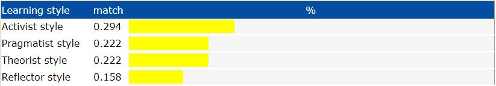
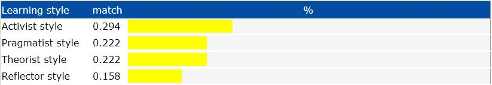
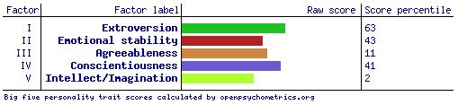

Brandon Ferguson
ePortfolio

Personal Information
Student Number: s3876709
Student E-mail: s3876709@student.rmit.edu.au
Mobile: +614 07 998 573
Website: flavaferg.github.io
I am an Australian citizen and have grown up in various parts of Geelong my entire life, I am a quarter Irish and a quarter Scottish although the other half of my nationality is unknown to me. My highest form of education is Year 12 VCE which I completed at North Geelong Secondary College. I have worked at McDonalds for almost 5 years within 2014-2019 and have tried out various trades in between such as Roof plumbing and Roof Tiling. I also did a Furniture Removalist gig for a few weeks. The only language I can speak fluently is English, but I know a few cuss words in other languages. I like to read books, play video games and hang out with friends in my spare time, my favorite books are Fear & Loathing in Las Vegas and Fight Club and my favorite author is Hunter S. Thompson, my favorite video game is Rust which I currently have just over 2000 hours on. But I also like to play Grand Theft Auto V and Apex Legends when I am not playing Rust.
Interest in IT
My interest in IT has sparked with my interest and entertainment I received from video games starting with Space Cadet Pinball on my parents PC slowly moving into Crash Bandicoot and then more advanced games as time passed, until today I have never stopped playing. Throughout my childhood I’ve worked with friends I met online and used open source scripts to create my own private servers for some of my favorite games such as Habbo Hotel, Garry’s Mod, Rust and Travian with accompanying forum websites by uploading the MyBB forum script using FileZilla where users for the servers could post various things based on the server whether it be complaints, ideas, ban appeals & requests or just general chat. I also made a Radio based Fan website for Habbo Hotel, where people with authorization could stream music over the radio which were referred to as DJ’s. After growing up a bit I realized I could use the fuel given to me from my interest in IT to do something a bit more and a bit larger than just using others scripts to make private gaming servers, it astounded me how these physical technological things known as computers can have such an effect on the world and are powerful enough to do almost anything. I have an uncle who has been interested in IT his whole life and is currently Head of Cyber Security at a University in Melbourne which having him in my life has helped fuel my interest in IT because whenever I got stuck somewhere, he would be able to help me figure out the issue that was stopping me from continuing and he would always have new things I’ve never seen before that was usually IT based.
Although I have my mind set on game development but I am still keeping an open mind on other jobs in the IT Industry I would possibly like to do so I started this Course through RMIT to help me learn a wide range of IT skills and get my Bachelor’s Degree in Information Technology to help me figure out what exactly it is that I want to do within the IT Industry. I also like the fact that it is 100% online as I am quite the Introvert or am an Introverted Extrovert at the least and I do get a bit anxious around large groups of people so the ability of being able to do the course in comfort at home was a huge part of the decision making of partaking in this course through RMIT.
During my studies at RMIT I aim to learn and gather a more deep and broader understanding of what IT is and what IT consists of, What parts go into a computer and what they do and how the software connects to the Hardware especially within AI based technologies and how it all works. Also I expect to learn a lot about programming as atm my main goal is become a game developer but would also like to make my own little projects along the way whenever I have a nice application idea pop up in my head. Also knowing the ins and outs of the environment within the IT industry and how IT is affecting the world whether for better or worse, I would expect to understand all of that once I complete this Bachelor’s Degree of IT.
Ideal Job
https://www.seek.com.au/job/51020819
Download PDF
This job position is full of experienced and passionate game programmers looking for a new member of their team to work on an astounding new Virtual Reality game. The people already working here come from a large range of backgrounds although that doesn’t stop them from working as a team and are extremely motivated to create the game. Also being able to work from home and working whenever I want to work. This job is appealing to me mainly because the game they are looking for programmers for is a Virtual Reality game which I think would be a good thing to be apart of as at the moment it is a big step in the evolution of video games. I also feel it would be a good way for me to gain experience and become noticed as a profession game developer. Also being able to work when I want and from home would be helpful for me as I can be flexible with when I work meaning I will have time to do my daily activities and work before I when I get home from doing my activities.
I have to have a strong experience with the coding language C# and experience using the Unity3D development platform. Common knowledge and experience with the features of gameplay like physics, UI’s, shaders, animation etc. knowing how a computer can perform and handle the game and understanding the limits of what a common gaming PC can handle so the game is not exclusive to Extremely High End PC’s. Experience is needed in most programming languages and software to allow to full functionality of the game with use of servers and API’s etc. Also experience with Version Control systems most commonly Git but also Mercurial or Perforce. Experience with many software development tools and practices that will help with the development of the game. I also need to be fluent with the English language and the ability to work well and thrive in an industry with a diverse range of team members. It would be plus if I had experience with Virtual Reality Development and online multiplayer and networking in the past, and Last but not least I Need to have a great passion and be enthusiastic for game development.
At the moment I really do not have many of these prerequisites to apply for this job other than a slight experience with version control, although it is strictly git at the moment and my passion for video games and development of video games. Although I have experience with Game maker which has also given me a little bit of sense within the gameplay features. But I am far from being able to apply for this job at this point in time.
My plan to be able to apply to this job or a job quite similar to this one would be completing my education within the bachelors of Information Technology and learn as much as I can about IT in a broader sense while also focusing specifically on Game Design, development, coding and use of servers and online networking. Throughout doing my Bachelors of IT Courses I will aim to get a few jobs in the industry once I feel comfortable that I have enough knowledge to be able to do the Jobs which in itself will help me slowly gain experience to get me into a job position like this one.
Personal Profile
Myers Brigs Test

Learning Styles Test
 

Big 5 Test

The Results of the 3 personality tests showed me that I am quite shy and quiet when around people im not used to but when I am with people I am close to I open up and shine when around them. Like I said in an earlier topic, these personality tests show that I am an introverted extrovert. IT also shows that I like the be authentic and true to myself while maintaining my moral standards. I think how this will affect me within a group or a Team, would be that I will sit back in the darkness and let others make the main decisions but in saying that I will participate and engage in conversations when spoken to but will go with the flow depending in what decisions the rest of the group has made while staying dedicated and then knuckle down and do the work that I was assigned to do as I am quite relaxed and would most likely be happy with whatever has been decided. When forming a team, I would most likely look for a group with a range of different skills and ideally find someone with great leadership skills that knows how to delegate others while coming up with a fair and tactical conclusion on what everyone in the team needs to be doing to pull their weight. Although that would be ideal, I am also capable of being happy with whatever team I come across with as I am very flexible and not bothered by the rest of the team, as long as I feel as if I am doing my part to contribute to the team and the others in my team do their part I will not mind.
Project Idea
Name: You Wouldn’t Do It (YWDI) / onlyStunts (depending whether legal issues will arise with onlyFans)
This project idea will be a platform where users can get paid to perform stunts and/or bizarre and wild things that people wouldn’t usually do just for the hell of it, or users can ‘chip in’ to give more incentive for other users to perform stunts and other unordinary activities. There will be various methods to the way users get paid to perform these stunts, from a kind of onlyFans styled subscription, to a Kickstarter styled process (user posts ill do this if I reach this much) and then a reverse kickstarter styled process (users post a stunt and someone claims the stunt when the money pool is worthy enough for them).
This project would be useful and interesting to wide variety of people, a lot of people find some form of thrill, humor or entertainment out of watching people doing stupid stuff, whether they get hurt or whether they smash the stunt out like a beast. The stunting industry is not as mainstream as it used to be when a new stunt movie or tv show such as jackass or The Dudesons were coming out every couple years or every week if were talking about the Television side of things. There isn’t really any platform out there where stuntmen can gain serious revenue with platforms such as YouTube becoming ‘family friendly’ and less and less of these activities being allowed on other platforms such as YouTube, and this platform would be a new beginning for the stunt industry.
With this platform that I intend to create anyone who wants to make a bit of cash from doing stupid stuff from licking a dog turd to jackass style stunts, or even ‘Bumfights’ styled stunts (although I believe a lot of legal issues would arise with Bumfights styled stunts, as we have seen in the past with the Bumfights law suits), will be able to perform these stunts for cash. There are three modes I feel like we will use to kickstart the platform but may also expand to different modes while we see the success and failure of the modes as time goes on. But the first mode Would be a user can post a stunt such as doing a five-star frogs plash from a tree, and they put a price on the stunt and all the other user’s chip in money until it reaches the amount the user who created it wants for doing the stunt or silly activity. From this point the money would be put in escrow until the user posts the stunt and has been verified by a server administrator or moderator. Once the stunt has been marked as completed the money raised to complete the stunt will be put into the “stuntman’s” bank account. The second mode would be, a user who is not competing in the stunt can put a stunt idea up such as “The Fence Headbutt” then everyone else using the platform for entertainment purposes can put in whatever amount they would like until someone who wants to make the money can claim the stunt at any point when they feel the stunt has reached a cash value of what they would consider doing the stunt for. In this case once the Stuntman has claimed the task, the money pool will be locked while all the money is in escrow until the task has been verified by the page moderators or administrators. With these first 2 modes the only people who get to see the stunt are the people who chipped in, we might even add a minimum ‘chip in’ to view amount such as $5 minimum to view the stunt/task but we will see how it goes without the minimum cash requirement first. The third and final mode of performing stunts will be more specific towards profession stuntmen and available who want to do stunts regularly. This method is a subscription-based method where people like stars from the notorious jackass crew can have a private page and perform any stunt they want and upload it to their private page that is only accessible to those who have paid the subscription fee. With the third method they will also have the ability to post a paid post where you have to pay specifically for that individual video with the option to still have that available to subscribers only (and if the subscriber will have to pay for that video) or whether the public can view and pay for the video of the stunt as well. It will all be trial and error as it progresses, first Ill see what will work, what does not, what’s legal and what’s not and add features and remove features when necessary.
The Tools and technology needed with this project would possibly be a server to run the website and keep it up but in the meantime we could use a Web hosting service and possibly even a Virtual Private Server if web hosting would not suffice. We will need to purchase a domain name for the site. We will need to create databases probably using phpMyAdmin and a FTP service such as FileZilla to transfer all of the files containing the data of the platform. Also a program like Dreamweaver would help to create the Frontend parts of the website that the platform will be viewed on by users.
Some skills that would be required is some basic knowledge of html and CSS or even experience with a tool such as Dreamweaver to create the front end part of the site, knowledge with databased and connecting the databases to the website so that everything that is submitted into the website will have somewhere to be stored. Moderating and Administrating Skills will be necessary to keep the platform running in a professional manner. And enough knowledge of hosting websites through a server if we chose to use a VPS or physical server, if we do not use a physical server some FTP knowledge will be needed to get the website live. This shouldn’t be too hard to perform and these skills are commonly used throughout the IT industry so it would be easy to hire people with the required skills
If this project is successful it will be a big step in the entertainment and stunting industry as it will give stuntmen a place to perform their stunts knowing that they are not doing it for nothing, and it will give the viewers a good source of entertainment knowing that they will only be spending their money on stunts/activities that they what they want to see as they have the decision to choose what they chip into. Although there could be a lot of legal issues that come with it, if it is done right it will bring jackass themed entertainment back into the mainstream entertainment.